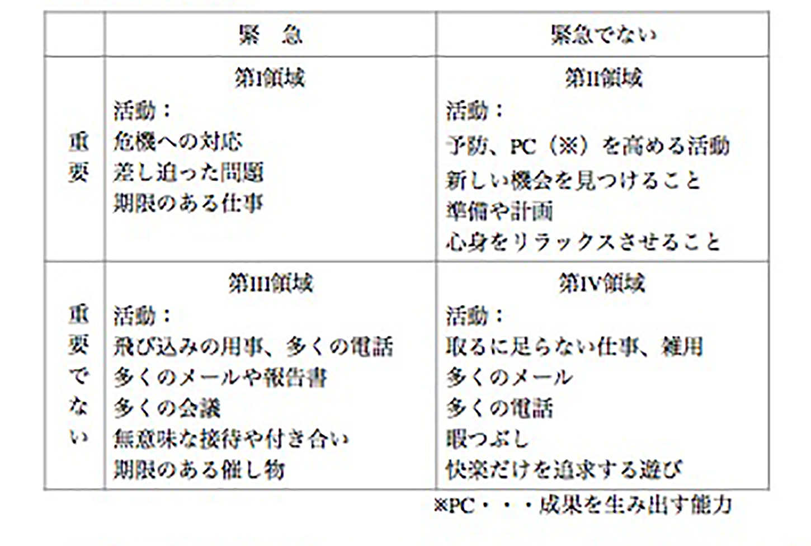

| ４冊のベストセラービジネス書が３０分でわかる本 | |
| 河村大輔 | |
| Hitotsuku Publication (2017) | |
河村大輔
小学校の教員を１４年間やってきました。師匠である槇田健先生から「本を読まない教師は、教師ではない。」と教えていただき、以来、読書をし続けています。蔵書は約３０００冊。読めば読むほど、読書の楽しさが増してきました。知識が増えるだけでなく、視点が上がっていくのが分かります。今まで見えなかったものが見えてくるのです。そして今、「学ぶから楽しい、楽しいから学ぶ」という学びの善循環に入ったことを実感しています。一人でも多くの人にこの楽しさを実感してほしいと思い、広く世の中に発信することを決意しました。
長倉顕太さん、安達元一さんが主宰する「メタルフォーゼプログラム２．０」に参加し、自分が本当にやりたいことをやれる人生を目指すことにしました。そのプログラムの一環として「Ｆａｃｅｂｏｏｋの友達を５，０００人にすること」という課題に挑戦しました。全く未経験のＳＮＳの世界に飛び込んで、あれこれやっているうちに、何とか友達の数を増やすことができました。
そんな折、Ｆａｃｅｂｏｏｋで知り合った大川賢太郎さんに、メッセージをいただきました。
「電子書籍を作ってみませんか。」
私にとって願ってもないチャンスでした。まさか、このタイミングでこんなオファーがあろうとは・・・。運命の神様の存在を感じました。
私、河村大輔の記念すべき処女作です。買ってくださった方、本当にありがとうございます。
本書は、有名な自己啓発本の中から４冊を選び、そのエッセンスを抽出したものです。「読んでみたいんだけど、なかなか読む時間が取れないなあ。」という方にはもちろん。「もう読んだよ。」という方にも復習として読んでもらえると面白いと思います。
この本は大きく４つ＋１つのパートに分かれています。
１ 人を動かす３原則
２ 人に好かれる６原則
３ 人を説得する１２原則
４ 人を変える１２原則
付 幸福な家庭をつくる７原則
どれも具体的な事例が挙げられていて、自己啓発本の中でも比較的読みやすい部類に入るでしょう。それぞれの原則に従って行動すれば、おのずと人間関係が上手くいき、人を動かす人になれますよ、という主張です。
私は「原則」と名付けられた項目の全てに共通する「大原則」を見つけました。
それは、
「人は論理ではなく、情動で動くものだ」
という大原則です。
古今東西、偉人と呼ばれる人はみんな、人を動かしてきた人です。どんな優秀な人間も自分一人では大きな偉業を成し遂げることはできません。いくら一人で頑張ったところで、人間一人にできることはたかが知れている。しかし、人を動かし、多くの人がその考え方に賛同するようになれば、大きなことを成し遂げることができる。
「人は論理ではなく、情動で動くものだ」
このことを、知っていると人を動かし、大きな成功を手にすることができるのです。
この本の中にはその大原則に基づいた具体的な事例がたくさん詰まっています。
例えば、最初のパート 人を動かす３原則のその１「盗人にも５分の理を認める」という章では、アル・カポネの言葉が引用されています。
「おれは働き盛りの大半を、世のため人のためにつくしてきた。ところが、どうだ――俺の得たものは、冷たい世間の非難と、お尋ねものの烙印だけだ」
誰もが、「えっ？そんな馬鹿な。」と思うでしょう。誰があの悪名高いアル・カポネが世のため人のためにつくしてきたという言葉を信じるでしょうか。
客観的に言えば、アル・カポネは犯罪者です。しかし、アル・カポネとしては、「世のため人のためにつくしてきた」という強い思い（情動）があるということです。ここで、アル・カポネがまだ生きているとして、目の前にいたとき、「いや、お前は間違っている。お前はこんな犯罪をしてきた。このように人に迷惑をかけたではないか。」と理屈で反省を促したところで、アル・カポネはちっとも反省しないでしょう。凶悪な犯罪者ですら、自分の信念に従って自分の言動を正当化するのです。普通の人が人から自分の悪いところを指摘されて、素直にそうだったなと反省するでしょうか。Ｄ・カーネギーはこのあたりの人間の性というものをよく分かっていたのです。
さて、ではどうすればよいのでしょうか。次の原則を見てみましょう。
人を動かす３原則その２は「重要感を持たせる」です。ここでは「相手の欲しがっているものを与えよ」と言っています。これも「情動」の力をよく知っているＤ・カーネギーならではの言葉です。では、相手の欲しがっているものとは何でしょうか。食欲、睡眠欲、性欲など様々な欲求がありますが、これらはたいてい満たすことができます。しかし、めったに満たされることのないものがあります。それは、「自己の重要感」です。人は「自己の重要感」を満たすために行動しているというのです。その例としてロックフェラーとディリンジャーという２人の男の例が挙げられています。
たとえば、ジョン・Ｄ・ロックフェラーにとって自己の重要感を満たす方法は、見ず知らずの中国の貧民のために、北京に近代的な病院を建てる資金を寄付することであった。ところが、ディリンジャーという男は、同じく自己の重要感を満足させるために、泥棒、銀行破り、ついには殺人犯になってしまった。Ｇメンに追われ、ミネソタの農家にかけこんだとき、「おれはディリンジャーだ！」といった。自分が凶悪犯であることを誇示したのである。
「おれは、おまえたちをやっつけたりする気はないよ。しかし、おれは、ディリンジャーだ！」
ディリンジャーとロックフェラーとの重要な違いは、自己の重要感を満たすためにとった方法の差である。
方法は違っても、２人の男は同じ「自己の重要感」を満たすという目的のために行動しています。ということは、自己の重要感を満たしてあげることが人を動かすうえでとても大切になります。
その３は「人の立場に身を置く」です。ここには、そっくりそのままビジネスシーンで使えそうな手紙の例が載っています。運送会社の社員が顧客に宛てた手紙です。前者はよくない例、後者はよい例が示されています。一部を引用してみましょう。
『拝啓 当方の現状について申し上げますと、取扱貨物の大部分が、夕方近く一時に殺到しますため、とかく発送業務に支障をきたしがちでございます。結果は、当方人員の時間外労働、積み込み及び輸送の遅延となります。（中略）右のごとく配慮いただければ、貴社のトラックの待ち時間も短縮され、貨物も即日発送されることとなります。敬具』
『拝啓 弊社は、１４年来貴社のご愛顧を賜り、深く感謝いたしますとともに、いっそう迅速かつ能率的なサービスをもってご愛顧にむくいたいと心がけております。しかしながら、去る１１月１０日のごとく、午後おそく一度に大量の貨物をお届けいただきますと、残念ながらご期待に添いかねる場合がございます。（中略）そうすれば貴社のトラックにお待ちいただく必要もなく、貨物は即時積み出しが可能になり、また、当社の従業員も定時に家庭に帰り、貴社製の美味なマカロニの夕食に舌鼓を打つことになりましょう。申し上げるまでもなく、貴社の貨物ならば、たとえ何時到着いたしましても、できるかぎり迅速に処理いたすよう、全力をつくしますゆえ、その点、なにとぞご安心ください。ご多忙と存じますので、ご返事のご配慮無用に願います。敬具』
どうでしょうか。どちらも「荷物を早めに届けてほしい」というメッセージを伝えるための手紙ですが、どちらが手紙をもらった人の「情動」を動かすでしょうか。前者は自分の都合相手に伝えるという立場から書いていますが、後者はあくまで「あなたの意向に沿うために」という立場から書いています。
ちょうどこの本を読んでいて、「あっ！あれと同じだ！」とひらめいたことがありました。誰もが知っているあのお話です。
「北風と太陽」（イソップ童話）
北風と太陽が力比べのために、旅人の服を脱がせることができるかという勝負をします。いくら北風が強い風を吹かせても、旅人はしっかりと服を押さえ、脱がすことはできませんでした。一方、太陽はポカポカと旅人を照らし、旅人は自分から服を脱ぎます。
人を動かすために「論理」を使うのが「北風」、「情動」に訴えるのが「太陽」だといえるでしょう。目標に対してダイレクトにアプローチするのが「論理」であり「北風」です。この本は、「人間は論理では動くものではない。」ということを教えてくれます。「人は情動で動く」このことを知っていれば、ダイレクトに論理を振りかざしても、期待する成果は見られないことが分かります。
よく、野球に例えられることがあります。
「ストレートばかりではダメだよ。変化球で攻めないとうまくいかないよ。」
人に好かれる６原則の中の３つ目は「名前を覚える」です。
フランクリン・ルーズヴェルト、アンドルー・カーネギー、ナポレオン三世、名だたる偉人はみんなこの名前の重要性を理解し、人の名前を覚えることに自分の注意力を向けているそうです。ルーズヴェルトの例を引用してみましょう。Ｗ・Ｆ・チェンバレンという人が、ルーズヴェルトのために特別に作った乗用車を制作し、それを大統領官邸に届けたときの様子を、ナポレオン・ヒルに宛てて書いた手紙の一部です。
わたしは、そのとき、機械工をひとり連れていっておりました。官邸に着いたとき、彼も大統領に紹介されましたが、そのあとは黙っていました。大統領は彼の名前を一度しか耳にしなかったわけです。元来が内気なたちで、この男はずっと人のかげにかくれていました。ところが、いよいよわれわれが辞去するときになると、大統領はその機械工をさがし出し、彼の名を呼んで握手をしながら、礼を言われました。しかも、そのいい方は、決して通り一ぺんのものではなく、心からの感謝があふれていました。
人の名前を呼んで話をする。些細な場面かもしれませんが、その効果は絶大です。
私は１４年間小学校の教員をしているので、人の名前を覚える大切さは身にしみてわかります。４月、子ども達との出会いの前に必ずしておくこと。たくさんありますが、その中の一つが子供の名前をすべて覚えることです。年度初めの忙しい時期に、全員の顔と名前を一致させる作業はなかなか大変ですが、その大変さをはるかに上回る効果があります。出会いの場面で、一気に子ども達の信頼を得ることができると思えば、名前を覚える苦労はさほど大したことではないなと思います。
人に好かれる６原則の中の４つ目は「聞き手にまわる」です。その中で悪い例として挙げられた、４つの項目を引用してみましょう。これを読めば、聞き手にまわることの重要性がよく分かると思います。
一、相手の話を、決して長くは聞かない。
一、終始自分のことだけをしゃべる。
一、相手がはなしているあいだに、何か意見があれば、すぐに相手の話をさえぎる。
一、相手はこちらよりも頭の回転がにぶい。そんな人間のくだらんおしゃべりをいつまでも聞いている必要はない。話の途中で遠慮なく口をはさむ。
いやあ。耳が痛いです。私が、ついやってしまうことです。じっくり話を聞かなければと思いながら、ついつい、「もっと要領よく、的確に話してよ。」とイライラしてしまう。でも、こうやって言葉にして並べられると客観的に自分の行動を反省させられるなと思いませんか。
果たして、こんな話の聞き方をしている人と一緒にいたいと思うでしょうか。
「聞き手にまわる」これはとても難しいことですが、絶大な威力を発揮します。
その次の原則「関心のありかを見ぬく」の中でも「聞き手にまわる」ことの大切さが強調されます。ここでは、エドワード・チャリフという人が少年をボーイスカウトの大会に出席させるための寄付をしてもらいたくて、ある大会社の社長に会いに行った時のエピソードが紹介されています。その社長が「百万ドルの小切手を額に入れている」という噂を聞いて、そのことについて詳しく聞いたのです。エドワードは自分のことは話しませんでした。ただ、その社長の話を聞いたのです。相手が関心を持っている内容を選んで。その結果は、大成功でした。ひとしきり話したその社長の方から切り出したのです。「ところで、あなたのご用件は、何でしたか。」そこで、用件を切り出すと思った以上の寄付をもらうことができたのです。
きっとストレートに自分の話を持ち出していたら、そんな予想以上の寄付をもらうことはできなかったでしょう。相手の関心のありかを見ぬき、聞き手にまわったからこそ、このような結果が得られたのです。まさに、ストレートではなく変化球ですよね。
人を説得する１２原則の８つ目は「人の身になる」です。
冒頭に重要な言葉がありますので、引用します。
相手はまちがっているかもしれないが、彼自身は、自分がまちがっているとは決して思っていないのである。
相手の考えや行動にはその理由があるのです。その理由を探して理解してあげることが、大切だと言っています。
小学生の子どもたちと接していると、そんな場面によく出会います。
例えば、子ども同士の喧嘩の場面。Ａ君が悪口を言い、Ｂ君が叩いたとします。客観的に見ればＡ君も、Ｂ君も悪いことをしたということになります。当然悪いことをしたことに対する指導はするのですが、それだけでは子どもたちの間にわだかまりが残ります。「人の身になる」という考え方で対応することで、２人のイライラをすっきりさせるのです。
「Ａ君、本当はどうしたかったの？」
と聞くのです。悪口を言ったことは悪いことだけど、その理由があるよね。本当は悪口を言いたくはなかったんだよね。というメッセージを伝えるのです。Ａ君は「先生は僕の身になって考えてくれている」ということを感じ、溜飲を下げることができます。Ｂ君に対しても同じように聞くことで、怒りのトーンが下がってきて、お互いに穏やかに話をすることができるようになります。
子どもほど顕著ではありませんが、大人にもこの考え方は有効です。人は「この人は分かってくれる」という人に対して心を開くものです。逆に、「この人は私のことを分かってくれない」と感じると、心を閉ざし、むしろ攻撃にまわることもあります。
人を変える９原則の６つ目は「わずかなことでもほめる」です。
心理学者のジェス・レアーの次のような言葉が紹介されています。
ほめことばは、人間にふりそそぐ日光のようなものだ。それなしには、花開くことも成長することもできない。われわれは、事あるごとに批判の冷たい風を人に吹きつけるが、ほめことばというあたたかい日光を人にそそごうとはなかなかしない。
工場で働く新入りの工員が職場になじめず苦労していた。主任もクビにしようとしていたその男が社長に褒められたことで、この工員の会社に対する態度を変えたというエピソードも紹介されています。たった一つの褒め言葉により、クビになる運命だったその工員は以後、忠実で献身的な従業員に生まれ変わりました。
「わずかなことでもほめる」この「わずかなこと」の例を私は他の本の中から見出しました。というより、それは「人を動かす」よりずっと前に読んだ本で、私の教員として生き方の指針となっていた本なのです。
「教師修行十年」向山洋一著の中に次のような文があります。
始業式の日、事実で彼をほめなければならなかった。子どもの世界では、わざとらしいことや嘘は通用しないからである。ぼくは彼の着ている服がぼくと同じでもほめようと思っていた。そのためジーパンをはいていったほどだった。彼が立っている地面がきれいでもほめようと思っていた
「馬鹿だから、死にたい」と言っていた子どもに対する向山氏の決意が表れた文です。若い教師だった私はこの文を読んで驚きました。「立っている地面がきれいでもほめる？そんな小さなことがほめる対象になるのか？」
その後、この子どもはいろいろな出来事を乗り越えて変わっていきます。近所の人たちが「どんな先生だって変えられない」と言っていた子が変わっていき、給食のおばさんのあいだでもその変化が噂になっていたと言います。顔つきまで変わって全く別人のようになってしまったと多くの人が言うほどになりました。
「わずかなことでもほめる」それは本当にささいなことかもしれませんが、それがその人にとっての日光となり、かたいつぼみが花開く糧となる可能性があるのです。
この本に出会ったのは、２０１５年の暮れのこと。２０１６年のお正月に今年の読書１冊目として読んだ本です。読み進めるにしたがって、目の前のもやもやがサーッと晴れていくような、そんな感覚でした。その名のとおり、第１から第７までの習慣が紹介されています。
第一の習慣 主体的である
第二の習慣 終わりを思い描くことから始める
第三の習慣 最優先事項を優先する
第四の習慣 Ｗｉｎ－
Ｗｉｎを考える
第五の習慣 まず理解に徹し、そして理解される
第六の習慣 シナジーを作り出す
第七の習慣 刃を研ぐ
主体的と言えば、人からやらされるのではなく、自分からやるということなのかな。主体的という言葉からは、そんな印象を持つことでしょう。私は７つのうちで最も大切な習慣だと思っています。これが体得できれば、その人はすでに幸せでいることができます。何にも縛られない自由な心が手に入るのです。実際、私は毎日が幸せです。何をしようかなとわくわくしています。毎日が幸せではないという人はぜひこの章だけでも読んでみるといいと思います。「主体的である」これは、考え方の転換とも言えるかもしれません。短く言い表すと次のようになります。
私たちの行動は、周りの状況ではなく、自分自身の決定と選択の結果である。
他の誰のせいでもない。自分が決めているということです。「主体的」でない人をこの本の中では「反応的」な人と呼んでいます。リアクションの人なのです。反応的な人は動かされているのです。例えばある人がお店に入ったとき、店員さんが水をこぼして、服が濡れてしまったとします。反応的な人は、怒ります。
「何やってんだ、気を付けろ！」
「どうしてくれるんだ！こんなに濡れてしまって！」
といった感じです。
そして、隣の友人に言います。
「店員がこぼしたせいで不愉快になった。」
しかし、主体的な人は少し違います。服が濡れてしまったことに対して、自分の行動を選択できるのです。笑顔で「いいんですよ。」と言うのか、まっかな顔をして怒り出すのか、この反応を選択できるのです。そんな余裕のある人は、きっと笑顔で対応する方を選ぶでしょう。そして、隣の友人に言います。
「濡れてしまったのだから、怒ってもしょうがないしね。」
※書いていて、アドラー心理学の「目的論」「原因論」と似ているなと思いました。
こうも書いてあります。
私たちは自分の身に起こったことで傷つくのではない。その出来事に対する自分の反応によって傷つくのである。
「夜と霧」で有名なヴィクトール・Ｅ・フランクルは収容所の中でさえも、希望を見失わないことを選びました。だからこそ、あの地獄とも称されるアウシュビッツ強制収容所で生き残ることができたのです。逆に希望を見失った人は次々と死んでいったと言います。同じ現状におかれても、それに対してどのように反応をするのか、これは自由なのです。
「自分の行動は自分で決められる。」
そうはいっても、なかなか発想の転換ができない人もいると思います。
「だって～なのは、自分のせいではない。」
と言いたくもなると思います。その気持ちもよく分かります。
実は私もそう考えていた人間だったのです。そんな自分が変われたのは、先ほどの「自分自身の決定と選択」言葉を意識したからです。日常生活の様々な行為、そして自分の性格までも含む人生で起こりうるすべてのことは自分が「決める」のだということに気づいたのです。
例えば朝起きることもそうです。これも自分が決めて起きています。ベッドにそのまま寝ているのも、すぐさま跳び起きるのも自由です。トイレに行くのもいかないのも、朝ごはんを食べるのも食べないのも、歯磨きをするのもしないのも、全て自分が決めてやっていることなのです。「しなければいけない。」と思うのは、実は勝手に自分が思い込んでいるだけなのです。本当に、心から、「したくない」と思えばしなければいいだけのことです。
朝起きて、仕事に行くのも自分が決めたことです。「仕事に行かなければいけない。」と思うのは、勝手に自分が思い込んでいるだけなのです。本当に、心から、「したくない」と思えばしなければいいだけのことです。今の仕事をすることに「決めた」のは紛れもない自分なのです。
中には、「しょうがなく今の仕事になってしまった。」という人もいるでしょう。「成り行き」でなってしまったという人もいるでしょう。しかし、「しょうがない」と判断したのは誰なのでしょうか。「成り行き」に任せることを決めたのは誰なのでしょうか。これも紛れもない自分なのです。「しょうがない」と思うことで数ある他の選択肢を自分で排除することを「決めた」のです。
「自分が今やっていることは、今自分が一番したいことであるべきだ。」苫米地英人氏は言います。その言葉を聞いて「そんなことは不可能だ。やらなければいけないことがたくさんある。」と、今までの私は思っていました。しかし、自分の「決定と選択」だということに気づいたとき、その言葉が素直に自分の中に入ってきました。「そうだ、今やっていることは、自分が決めてやっているのだ。」と思えたのです。
さらに言えば、自分の性格も自分で決めることができます。例えば「内向的だ」と思っている人は、自分が内向的だと決めています。心からその性格が嫌ならば、やめればいいのです。その瞬間から「自分は社交的だ」と決めればいいのです。そして、社交的に振る舞います。明るい服を着て、笑顔を作り、今すぐ家のドアを開けて人に会いに行けばいいのです。それをしない人はやはり、自分は「内向的だ」と決めているのです。
「主体的であること」は「ねばならない」（have to）ことをし続ける人生ではなく、「したい」（want to）ことを探す人生なのです。
この章の一番初めにゲーテの言葉があります。
大事を小事の犠牲にしてはならない。
何が大事で何が小事なのか。これを決めるのが優先順位をつけるということです。「第２の習慣 終わりを思い描くことから始める」では、人生のミッション・ステートメントを決めることを説いています。
ミッション・ステートメントとは、信条あるいは理念を表明したものである。個人のミッション・ステートメントには、どのような人間になりたいのか（人格）、何をしたいのか（貢献、功績）、そしてそれらの土台となる価値観と原則を書く
ミッション・ステートメントは例えば次のようなものです。
まず家庭で成功しよう。
神の助けを求め、それにふさわしい生き方をしよう。
どんなことがあっても正直でいよう。
お世話になった人たちの恩を忘れずにいよう。
判断を下す前に双方の言い分を聴こう。
他人の忠告に素直に耳を傾けよう。
そして、そのミッション・ステートメントに基づいて優先順位を決めます。
感情を抑え、最優先事項を優先するには、目的意識と使命感が要る。第２の習慣で身につけた明確な方向感覚と価値観が要る。そして、優先する必要のない「ノー」とはっきり言えるためには、あなたの中に燃えるような「イエス」がなければならない。
「最優先事項を優先する」この裏側には、「優先事項でないことはやらない」という言葉がついて回ります。「ノー」が言えるということです。しっかりと目的意識と使命感をもって生きている人は「ノー」が言えるのです。
「無愛想のススメ」（池田潤著）という本があります。これも大変示唆に富んだ面白い本なのですが、その中に次のような言葉があります。
嫌われないことを最優先にすれば、人生は上手くいかない
「ノー」が言えない人は、ミッション・ステートメントに沿った優先順位を考え直す必要があるでしょう。自分が棺桶に入るとき、弔辞で何を言ってほしいか。多くの人は決して「彼は、イエスマンでした。」と言ってほしいとは思わないでしょう。
さて、「７つの習慣」では優先順位を決める上で大変重要な指標を、示してくれています。時間管理のマトリックスです。

この表は、いつも頭に入れておくといいと思います。私はこの図を見て、すぐにノートに書き写しました。自分の人生の中の時間の使い方を見直すために、とても重要な表だと思ったからです。
なぜこの表がそんなにも大切なのでしょうか。次の説明を読めば、はっきりするでしょう。
私たちは緊急の用事には受動的に反応（react）する。だが、緊急ではないが重要なことをするには、率先力と主体性が要る。機会をとらえたり、物事を実現させたりするには、能動的に動く（act）ことがひつようなのだ。第２の習慣が身についておらず、何が重要なのか、人生において追求する結果をはっきりと思い描けていない人は、緊急の用事ばかりに簡単に反応し、人生の目的からそれていってしまう。
つまり、私たちが大切にしなければならないのは第Ⅱ
領域「緊急でないが重要なこと」なのです。ミッション・ステートメントに基づいて行動できる人は、第Ⅱ
領域を大切にすることができます。先ほどのゲーテの言葉を借りれば、第Ⅲ
領域が「小事」であり、第Ⅱ
領域が「大事」なのです。
アドラー心理学。
今、本屋に行けば必ず目に入る言葉です。最近になってブレイクした感がありますね。しかし、アルフレッド・アドラーはフロイト、ユングと並んで「心理学の三大巨頭」と称される心理学者です。
この本はそのアドラーの思想を青年と哲人の対話の形式でまとめられています。哲人が青年との対話で、アドラーの考え方を分かりやすく説明しているので、あまり読書の経験がない人でもすらすらと読み進めることができます。
私がこの本を読んだとき、「これは哲学書だ」と思いました。心理学という一分野の枠を飛び越えた「人はいかに生きるべきか」を示した哲学書です。今、悩みを抱えて生きる多くの人々に、明るい光を与えてくれる本です。
第一夜 トラウマを否定せよ
第二夜 すべての悩みは対人関係
第三夜 他者の課題を切り捨てる
第四夜 世界の中心はどこにあるか
第五夜 「いま、ここ」を真剣に生きる
ここでは、第一から第三までの内容に絞って紹介します。
青年と対話する哲人が言います。
いまのあなたが不幸なのは自らの手で「不幸であること」を選んだからです。
多くの人が反論したくなる言葉でしょう。わたしたちの常識をひっくり返す挑戦的な言葉です。しかし、この言葉こそが「目的論」を端的に表した言葉なのです。そして、「目的論」に相反する考え方が「原因論」です。原因論の方が私を含めた多くの人々の常識に近い考え方だと言えます。
哲人はさらにこのようにも言います。
われわれは原因論の住人であり続けるかぎり、一歩も前に進めません。
では、この「原因論」とは何でしょうか。簡単に言うと、
「今このような状態なのは、過去の〜が原因なのだ。」
という考え方です。今貧乏なのは、学校で一生懸命に勉強しなかったからだ。今私が引きこもりになっているのは、学校でいじめられたからだ。このように考えるのが原因論です。
この２つの例を見て、違和感を覚えた人はあまりいないと思います。多くの人はこのような考え方をしているのではないでしょうか。
しかし、アドラー心理学では原因論の立場を取っていません。原因論と相反する考え方、つまり目的論を取っています。
目的論とは何でしょうか。
「今このような状態なのは、私がある目的をもって行動を選択した結果だ。」
という考え方です。
本の中では、青年が喫茶店でウェイターにコーヒーをこぼされ、怒鳴り散らしてしまったエピソードを話します。これも目的があって行動したのかと哲人に迫ります。
すると、哲人は次のように答えました。
あなたには大声を出す、という目的が先にあった。すなわち、大声を出すことによって、ミスを犯したウェイターを屈服させ、自分のいうことをきかせたかった。その手段として、怒りという感情を捏造したのです。
青年は反論します。そんなことを考える余裕などなかったと。哲人はさらに、口論していた母親が電話に出るときの場面を例に挙げてこう続けます。
要するに、怒りとは出し入れ可能な「道具」なのです。電話がかかってくれば瞬時に引っ込めることもできるし、電話を切れば再び持ち出すこともできる。この母親は怒りを抑えきれずに怒鳴っているのではありません。ただ大声で娘を威圧するため、それによって自分の主張を押し通すために、怒りの感情を使っているのです。
どうでしょうか。目的論とは何かが少しイメージできたでしょうか。第２章でも少し触れましたが、「７つの習慣」の「主体的になる」で言われていることと似ていると思いませんか。この目的論という考え方により、人は過去の呪縛から解き放たれて、未来の行動への自由を手に入れることができます。未来は過去の延長線上にあるのではなく、自ら選びとるものなのです。
私はこの考え方こそが、アドラー心理学の根底にある、しっかりとした土台だと思っています。
第一夜のタイトルともなっている「トラウマを否定せよ」という言葉。トラウマという考え方こそが、原因論の根幹にかかわる考え方です。心的外傷（traumatic experience トラウマ）とは「人が強いショックやストレスを引き起こす過度な情動体験をしたとき、それがコンプレックスとなってその後の神経症的症状形成につながる（「心理学事典」 有斐閣より）」という考え方です。つまり、過去にあった出来事が原因で、今現在の心の状態が不適切な状態になってしまうというものです。過去が現在を決めているという考え方なのです。その意味ではトラウマという考え方を提唱したフロイトとは、一線を画しています。
なぜあなたは自分が嫌いなのか？なぜ短所ばかり見つめ、自分を好きにならないでおこうとしているのか？それはあなたが他者から嫌われ、対人関係のなかで傷つくことを過剰に怖れているからなのです。
アドラーは「人間の悩みはすべて対人関係の悩みである。」と言い切っています。そして自分と他人とを比べることがその人間関係の悩みの根本にあります。
私は、子どものころ背が低いのが悩みでした。今、思えば実にばかばかしい悩みですが、その頃は結構真剣に悩んでいました。私の身長は確か小学校高学年ぐらいのときに１３０センチほどだったと思います。１５０センチある友達がとてもうらやましかったのを覚えています。背が高いだけでかっこよく見えました。それだけで人間として優れているような気がしていました。そして、なんで自分はこんなに背が低いのだろうなどと悩んでいました。この悩みはなぜ生まれるのか。それは自分と他人との比較です。学級にたった一人しかいなければ、私は背が低いことを悩むことはなかったでしょう。
「すべての悩みは対人関係」これは他人との比較に端を発しています。
あの人よりもお金持ちではない。
あの人よりもかっこよくない。
あの人よりもかしこくない。
あの人よりも背が高くない。
あの人よりも健康ではない。
あの人よりも・・・・。
これが人間の悩みの根本です。あなたの悩みも突き詰めて考えれば他人との比較に行きつくでしょう。他人と比較して自分がより劣っているという劣等感が人を悩ませます。
しかし、この劣等感は主観的な解釈です。哲人と青年とが次のような会話をしています。
哲人 わたしが自分の身長に感じていたのは、あくまでも他者との比較――つまり対人関係――のなかで生まれた、主観的な「劣等感」だったのです。もし比べるべき他者が存在しなければ、私は自分の身長が低いなどと思いもしなかったはずですから。あなたもいま、さまざまな劣等感を抱え、苦しめられているのでしょう。しかし、それは客観的な「劣等性」ではなく、主観的な「劣等感」であることを理解してください。身長のような問題でさえも、主観に還元されるのです。
青年 つまり、われわれを苦しめる劣等感は「客観的事実」ではなく、「主観的な解釈」なのだと？
私たちは主観的解釈によって悩んでいるのです。それならば話は簡単です。解釈を変えればその瞬間に悩みは解決するのです。
本の中の哲人も背が低いという劣等感を持っていたのですが、友人から「大きくなってどうする？お前には人をくつろがせる才能があるんだ」と言われ、「客観的事実」の「主観的な解釈」が変わったと言っています。
こう考えると少し肩の力を抜くことができますね。人と比べない。自分の価値を主観的に解釈する。このことで多くの人が悩みから救われるのではないでしょうか。
付け加えておくと、哲人は「劣等感それ自体は、別に悪いものではない。」と言っています。「劣等感をある種の言い訳に使い始める」ことが問題だと言っています。
私がこの章を読みながら頭に思い浮かんだ言葉は「他者意識」です。以前からこの他者意識について考えてきました。子どもたちに他者意識を育てるにはどうしたらよいのか。他者意識を育てることを阻害しているものは何なのか。
この章には私の問題意識に合致した答えが書かれていました。
他者の課題と自分の課題とを分離せよという主張です。他者の課題には介入せず、自分の課題にも介入させないということです。
青年 じゃあ、自己中心的に、好き勝手に生きろと？
哲人 課題を分離することは、自己中心的になることではありません。むしろ他者の課題に介入することこそ、自己中心的な発想なのです。親が子どもに勉強を強要し、進路や結婚相手にまで口を出す。これなどは自己中心的な発想以外の何物でもありません。
特に日本人の中にはこの考えになじめない人が多いでしょう。日本は同質性の高い国です。多くの人が同じような考え方をし、同じような生き方をしています。学校では「みんな仲良く」「助け合って」が推奨され、同質性の確認がいたるところでなされています。「私も僕も同じ気持ちだよね。」の確認です。
日本人にとって「あの人、変わってるよね。」は決して褒め言葉ではありません。出る杭は打たれ、高みに上った者は引きずり降ろされます。「みんな一緒」が大切なのです。
他者意識がない人は他人の課題に介入しても全く意に介しません。そんな介入だらけの世の中だからこそ、この「課題の分離」という考え方は光を放ちます。
さらに哲人は承認欲求と自由について言及します。
他者の評価を気にかけず、他者から嫌われることを恐れず、承認されないかもしれないというコストを支払わないかぎり、自分の生き方を貫くことはできない。つまり、自由になれないのです。
「我と彼とは違う人間だ。」
その意識を持っていれば、自由に生きることができるということです。
実を言うと私はこの本を買ってから、ずっと長いこと読んでいませんでした。「思考は現実化する」このタイトルに惹かれて購入しましたが、とても厚い本なので積読（つんどく）状態でした。しかし、この本の背表紙をいつも目にしていたので、「思考は現実化する」という信念が私の頭の中でどんどん大きくなってきました。他の様々な本を読みながら、そして、さまざまな経験を重ねながら、「思考は現実化する」は事実であるということが分かってきました。
自己啓発書の書評本を書くに当たって、この本は絶対外せないなと思い。何年ぶりかにこの本を開きました。この本は序章を含めた全１９章からなっています。
序章 思考は現実化する
第１章 思考は現実化しようとする衝動を秘めている
第２章 願望の設定は、あらゆるものの達成の出発点である
第３章 信念は願望実現の原動力である
第４章 深層自己説得を活用する
第５章 個人的経験と観察力を高める
第６章 脳の中に浮かぶ神羅万象の世界を活用せよ
第７章 体系的な行動計画を立てる
第８章 速やかに決断せよ
第９章 忍耐力を身につける
第１０章 マスターマインドの力
第１１章 モティベーションを生み出す魔法のアイディア
第１２章 潜在意識は海面下の王国である
第１３章 頭脳は宇宙が宿る小さな器である
第１４章 第六感は英知の殿堂への扉を開く
第１５章 強烈な本能を創造的なものに転換せよ
第１６章 失敗も生き物である
第１７章 悲しみを通して魂にいたれ
第１８章 不安という名の七つの亡霊
どれも興味深い内容なのですが、私が特に面白いと思った部分に絞って紹介します。
人生の闘いに勝つのは、必ずしも最も強くて、最もすばしっこいひとではない
最終的に勝利を収めるのは、"私はできる"と思っている人なのだ
この言葉に、「思考は現実化する」という主張が集約されていると言っても過言ではないでしょう。世の中で偉業を成し遂げた人は、多くの場合大反対にあっています。「そんなの無理だ。」「できるわけない。」「時間の無駄だ。」「失敗するに決まっている。」そんな大反対を受けても、動じなかった人間。逆風の中でも自分を信じることができる人間。最後まであきらめない人間。そんな人間が偉業を成し遂げてきたのです。
あのイチロー選手もメジャーに移籍するときに、周りの人から反対されたと言います。「野手で成功するわけがない。」「あんな細い体では戦い抜けない。」などという意見があったそうです。それでもイチロー選手は自分を信じていました。「絶対にできる」信じていたのです。
私の生き方のメンターの一人に中村文昭さんという人がいます。全国を講演して回っている人なのですが、中村さんの講演CDの中にも同じようなエピソードがありました。引きこもりの子どもたちを集めて農業をするという計画を立てた中村さんは、農家の人に農業の仕方を教えてもらいに行きます。しかし、「できるわけがない。」「農業をなめるな。」と叱られたそうです。中村さんはその時、このように思っていたそうです。「これは、成功したときのネタになるな。プロジェクトエックスや、カンブリア宮殿やエチカの鏡で紹介されるとしたら、オープニングはこの映像だな。」中村さんの目には、成功したときの映像がはっきりと見えていたのでしょう。その後、東京ドーム何個分という大きな農場の経営を成功させているということです。
「成功するにはどうすればよいか。」
この問いには一言で答えられます。「成功すると信じること」です。
この本には「成功すると信じる」ためのノウハウが詰まっています。
（前略）あなたは、「紙に書いた宣言を、一日に二回、起床直後と就寝前に、なるべく大きな声で読むこと。このとき、あなたはもうすでにその願望を実現したものと考え、そう自分に信じ込ませることが大切である。」ということを知ったはずだ。そうすることによってあなたは、絶対的な信念を潜在意識に注入したことになる。そしてやがてそれは潜在意識の中で不動の、確固たる信念になっていくのだ。
潜在意識という言葉が出てきて思わず膝を打ちました。「やっぱりそうか。」成功法則などに関する自己啓発本を読むと必ずと言っていいほど「潜在意識」という言葉が出てきます。この一日二回の習慣を実行することが、潜在意識にアクセスする方法です。なぜ、この方法が潜在意識にアクセスできるのか。わたしはつぎの２つのポイントを見出しました。
１つ目は、それが「何度も繰り返される」ということです。人間の脳は重要な情報とそうでない情報を振り分けています。重要な情報だと判断する基準は２つです。１つは、「生命の危険を感じる情報」です。命を存続させるために遺伝子に組み込まれているのでしょう。そしてもう１つが、「繰り返し入ってくる情報」です。毎日２回、繰り返し読むことで脳は「これは重要な情報なのだ」と判断します。よくテレビコマーシャルで繰り返し見る商品は「なんだか品質がよさそうだ。」「なんとなくこちらを買おう。」と思うようになるのと同じです。潜在意識にアクセスするには「何度も繰り返される」ことが大切なのです。
２つ目は、「五感に訴える」ということです。ただ単に読むだけでなく、その願望が実現したときの「目に見える風景」「聞こえてくる音」「におい」「手触り」「味」をイメージし、臨場感を高めていくのです。先ほどの中村文昭さんの例でも言えることです。イメージの力が強ければ強いほど、潜在意識にはっきりと刻まれていくのでしょう。
忍耐力を習慣として身につけた人は、たとえ失敗しても、あたかも失敗そのものを保険にかけているように涼しい顔をしているものだ。そのような人こそ、どんなに失敗を重ねても、最後には梯子の最上段に登りつめることのできる人なのである。
この章には、失敗に関する考え方について多く書かれています。
「失敗は、あきらめない人にとってのみ成功への一里塚となる」
「どのような最低の失敗であっても、そこから何の利益も得られない、ということはないのである。」
「失敗や逆境の中には、すべてそれ相応かそれ以上の大きな利益の種子が含まれている」
ベートーヴェンのあの有名な話も登場しています。
私は彼に「聴力障害は大きなハンディにはなりませんか？」と聞いてみた。彼の答えはこうであった。
「いやいや、それどころか、耳の聞こえないことで私は大助かりしていますよ。くだらないおしゃべりを聞かなくてすみますからね。それで"内なる声を聞く"ことができるようになりました」
失敗せずに偉大な成功を成し遂げた人はいないでしょう。本人がそれを「失敗」と認識しているかどうかは別の話ですが。
人は新しいことをやろうとすると必ず失敗するものです。今までやったことがないからです。失敗を避けるには、「今までやったことをくり返す」か「何もしない」という選択肢しかありません。どちらを選ぶべきかは、だれの目にも明らかですよね。
その「失敗」の先に何があるのか。それを分かっている人はそんな「些細な事」に心を動かされることはないのでしょう。
「人間は、自分の愛する仕事に携わっているとき、または愛する人のために仕事をしているときに、最も仕事の効率を上げるものである。」
モティベーションを生み出すアイディアとは、一言で言えば「好きなことをやれ」ということです。自分の好きな仕事、そして好きな人を喜ばせるためにやる仕事をするとき、あなたは報酬が多いのか少ないのかについて考えるでしょうか。きっと考えないと思います。心から好きな仕事をやるとき、あなたは報酬以上のパフォーマンスを発揮するでしょう。その仕事をすること自体が喜びだからです。
この「報酬以上のパフォーマンス」がここでは肝なのです。
報酬以上のパフォーマンスを続けていると、または無報酬で奉仕をしていると、そのパフォーマンスに見合うだけの報酬が後からついてくるのです。
心理学の実験でも似たような状況が生まれます。実験会場に来た被験者に、実験者がコーヒーをおごります。「ついでに２本買ったのでどうぞ。」という具合です。もう一方の条件では、コーヒーをおごりません。するとその後の実験で、被験者が商品を買うか買わないかという結果に大きな影響が出たということです。コーヒーを奢ってもらった人ほど、商品を買う傾向が高くなったというのです。
この章には次のようなエピソードも載っています。「マーシャル・フィールド」という洋服商での話です。そのお店で買った５０ドルのブラウスをある女性が二年後に返品し、他の商品と変えてもらったということから始まります。
ブラウスを返品にきた女性は、もともと払い戻しの資格も権利もないことをあらかじめ知っていた。しかしフィールドの店が彼女の要求を受け入れたまさにそのときから、彼女は永遠のお得意さまになったわけである。それだけではない。「フィールドの店の親切さ」を彼女は折に触れて友人知人にふれまわった。今の言葉で言えば、口コミである。彼女の知り合いや友人たちの間で、この話はそれから何日も続いた。フィールドの店は、５０ドルの投資でそれの数十倍の宣伝効果を得たことになる。
好きな仕事をし、好きな人のために、報酬以上のパフォーマンス、または奉仕をすることで、あとから素晴らしい報酬が返ってくるのです。
さほど長くはない本ですが、書き終えるのに２か月弱も時間がかかってしまいました。初めて本を書くという作業をし、不慣れだったからとも言えるし、もともと私が怠惰な性格だったからとも言えるでしょう。しかし、一番の原因は原稿を書きながら様々なことを考えたからです。おそらく私の３８年の人生の中で最も大きな転換期だと思っています。自分はこれからどうやって生きていくのか。そんなことを考えながら、今までやったことのないことに挑戦しました。飛行機や新幹線の中、カプセルホテルの部屋で書いた部分もあります。書きながら、他の本の執筆アイディアが頭に浮かんだりしました。こんな本を読んでくれる人がいるのだろうかと不安になったこともあります。キングダムを大人買いして読みふけったり、Ｆａｃｅｂｏｏｋのお友達から紹介された本に夢中になったりしながら少しずつ書き進めました。
そんな河村大輔の本を最後まで読んでくださってありがとうございます。今の河村大輔の力はこんなものです。でも、私にはこれからもっと価値ある情報を世の中に提供していく自信があります。これに懲りずに河村大輔の次の本を手に取ってくれる人が一人でもいればうれしいです。
タップしても登録できない方は、「＠ ｆａｘ１８４４ｒ」でＩＤ検索してください。（＠ をお忘れなく）